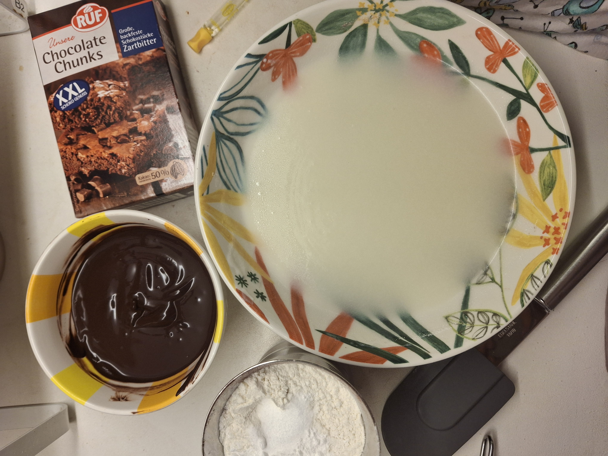
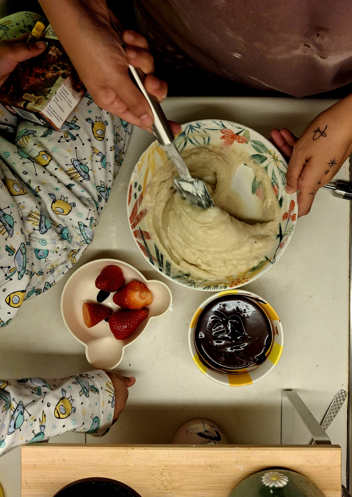
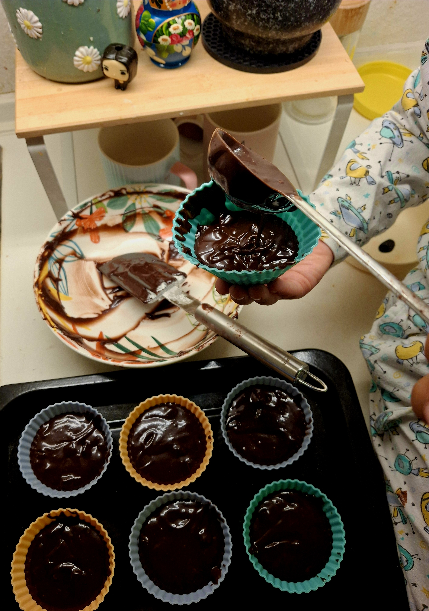
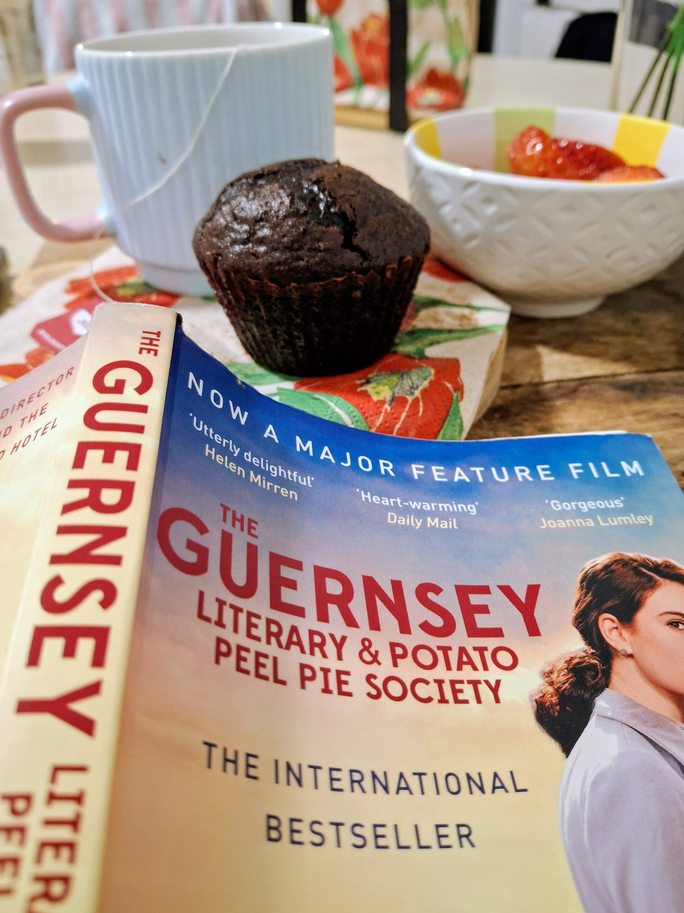

There is a German word, liebgewinnen—to grow fond of something over time. It’s a quiet, unhurried process, and it’s exactly how I’ve begun to feel about the mornings here.
There was a time when breakfast meant something warm, savory, and familiar. Bakeries were just places I passed by—background noise in my morning routine. But slowly, I started noticing the glass shelves, the smell of butter, and the quiet rhythm of the neighborhood waking up.
One particular chocolate muffin in a window stayed with me. Since I prefer my bakes to be eggless, I took the idea of it home. I experimented until I found the secret: mixing the cocoa powder with hot water first. I use German Raffinade sugar; it is much finer than what I grew up with in India. Eventually, I arrived at a "house recipe"—something I hope my daughter might one day associate with home.
The House Chocolate Muffin
The secret starts with blooming the cocoa in hot water to wake up the flavor. While that cools, everything happens in one bowl.
First whisk oil and curd together, then add sugar and whisk until everything neatly combines.

Then sift flour, baking soda and baking powder together and mix gently. Oh I forgot, we need some milk to adjust the texture.

Then add vanilla essence and cocoa mixture and add chocolate chunks.

Then bake them at 200°C first for 5 mins then at 180°C until the toothpick comes out clean.

The Guernsey Back Home
While I wait for my muffins to rise, I’ve been living inside the pages of The Guernsey Literary and Potato Peel Pie Society. It is an epistolary novel, and I am savoring it slowly because I don't want it to end.
I love Juliet’s wit—incidental and honest, never sarcastic. There is such strength in her independence. I find comfort in Isola’s humor, the collective warmth of raising Kit, and Elizabeth—whose heart was so big it was almost a burden. As Remy said, it would have been nice for her if she didn't have such a heart.
This "kind company" makes my mind drift back to the friends I made during my Master’s at EFL-U Hyderabad. They are my "Guernsey" back home. They provide a steady comfort that reaches me even across this distance. In a world that can often feel guarded, they remain wide open.

I think I’ll take my time with the last few chapters. Some things are better when you don't rush the ending.